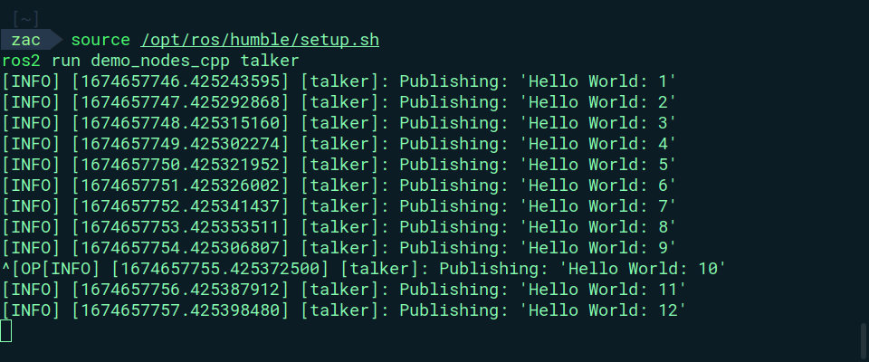
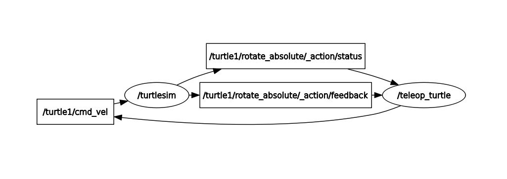
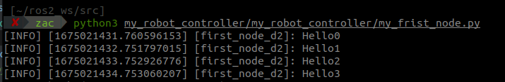
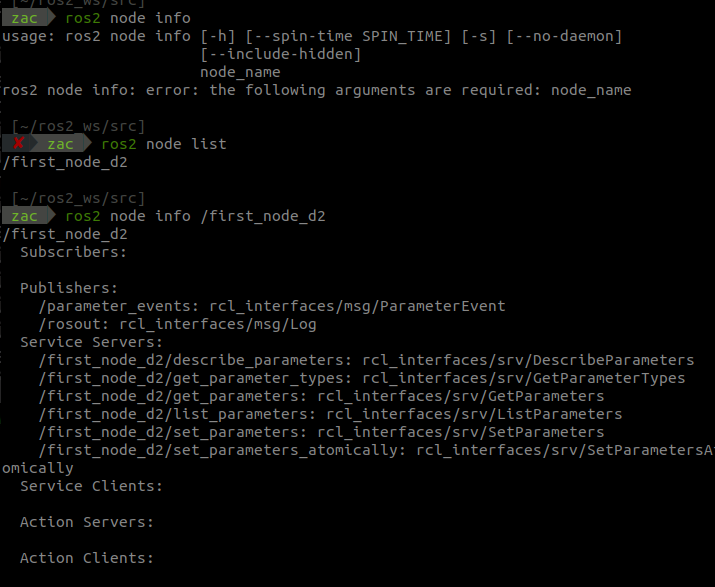
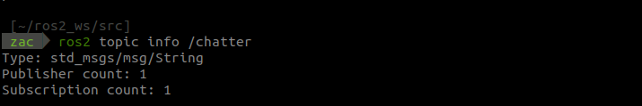
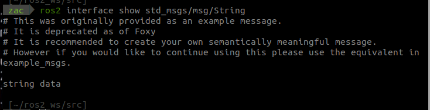
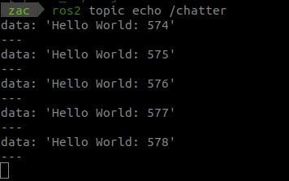
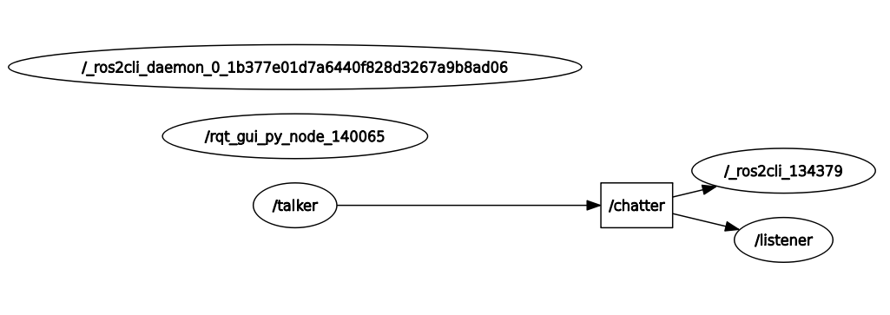
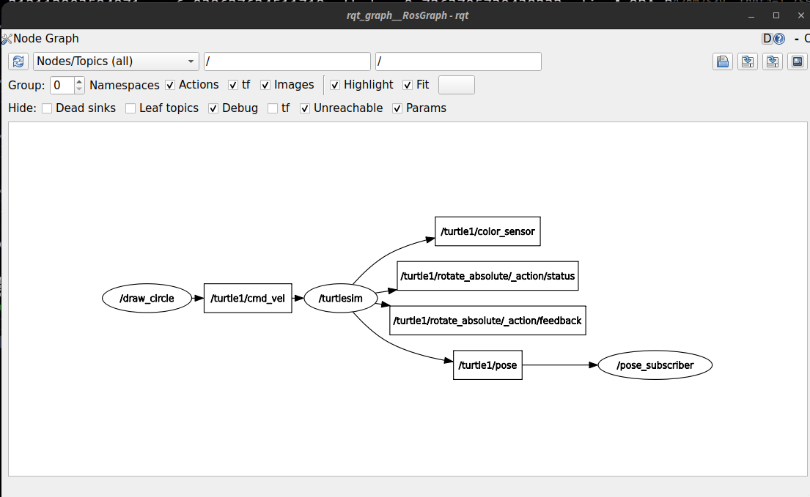
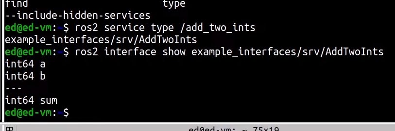

Basic commands
ros2 run demo_nodes_cpp talker
ros2 run demo_nodes_cpp listener
rqt_graph #representation of all the nodes
ros2 run turtlesim turtlesim_node
ros2 run turtlesim turtle_teleop_key

ros2 pkg create my_robot_controller --build-type ament_python --dependencies rclpy
colcon build
chmod +x my_frist_node.py
source ~/.bashrc
colcon build --symlink-install
# !/usr/bin/env python3
import rclpy
from rclpy.node import Node
class MyNode(Node):
def __init__(self):
super().__init__("first_node")
self.get_logger().info("Hello from ROS2")
def main(args=None):
rclpy.init(args=args)
node = MyNode()
# rclpy.spin(node)
# node.destroy_node()
rclpy.shutdown()
if __name__ == '__main__':
main()
# !/usr/bin/env python3
import rclpy
from rclpy.node import Node
class MyNode(Node):
def __init__(self):
super().__init__("first_node_d2")
# self.get_logger().info("Hello from ROS.")
self.Counter = 0
self.create_timer(1.0, self.timer_callback)
def timer_callback(self):
self.get_logger().info("Hello" + str(self.Counter))
self.Counter += 1
def main(args=None):
rclpy.init(args=args)
node = MyNode()
rclpy.spin(node) #spin will be alive until you kill it
# node.destroy_node()
rclpy.shutdown()
if __name__ == '__main__':
main()

ros2 node list
ros2 node info /first_node_d2

ros2 topic info /chatter

ros2 interface show std_msgs/msg/String // ros2 interface show +TYPE

ros2 topic echo /chatter
 
import rclpy
from rclpy.node import Node
from geometry_msgs.msg import Twist
class DrawCircleNode(Node):
def __init__(self):
super().__init__('draw_circle')
self.cmd_vel_pub_ = self.create_publisher(Twist, "/turtle1/cmd_vel",10)
self.timer_ = self.create_timer(0.5, self.send_velocity_command)
self.get_logger().info('Draw circle node has been started')
def send_velocity_command(self):
msg = Twist()
msg.linear.x = 2.0
msg.angular.z = 1.0
self.cmd_vel_pub_.publish(msg)
def main(args =None):
rclpy.init(args = args)
node = DrawCircleNode()
rclpy.spin(node)
rclpy.shutdown()
if __name__ == '__main__':
main()

ros2 run demo_nodes_cpp add_two_ints_server
ros2 service list
ros2 service type /add_two_ints
ros2 interface show example_interfaces/srv/AddTwoInts
ros2 topic hz /turtle1/pose
average rate: 62.490
min: 0.015s max: 0.017s std dev: 0.00053s window: 64
average rate: 62.513
#! Create a service client
def call_set_pen_service(self, r,g,b,width,off):
client = self.create_client(SetPen, "/turtle1/set_pen")
while not client.wait_for_service(timeout_sec=1.0):
self.get_logger().warn("Waiting for service...")
request = SetPen.Request()
request.r = r
request.g = g
request.b = b
request.width = width
request.off = off
future = client.call_async(request)
future.add_done_callback(partial(self.callback_set_pen))
def callback_set_pen(self,future):
try:
response = future.result()
except Exception as e:
self.get_logger().error("Service call failed: {}".format(e))

--- Growing, Growing, Brighter Everyday ! ---